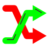
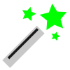
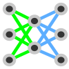

Object Detection¶
Object detection is the identification of the position of each target object in an image. Object detection can be used for quantification, counting or tracking.
{kind=link}
Detection of cells (green) and dividing cells (red), original image from 1¶
Labelling¶
To train a neural network for object detection it is necessary to create images that are labelled accordingly.
Object detection tools¶
Different tools and functions in MIA exist to label images for object detection.
To label an image select a tool and draw inside the image to label image objects.
Note
There is no save option as all changes during labelling are saved immediately. Use or ctrl + z to undo the last labelling action.
{kind=link}
All labels are saved in a subfolder inside the currently active folder and have the same file name as the currently selected image, but with .npz as file extension.
Tools¶
By selecting the tool or pressing F1 you can always switch to the drag tool to zoom and change the field of view. Press the Spacebar to toggle between drag tool and the last selected tool.
{kind=link}
Use (or press F2) to add objects. Press left_mouse on the target object to label its position with the current active class.
{kind=link}
With (or press F3) you can shift objects. Press and hold the left_mouse near a labelled object and drag to move its position.
{kind=link}
The  tool (or press F4) can be used to asssign a new class to an existing object. Select the target class and press the left_mouse close to an existing object.
{kind=link}
The tool (or press F5) can be used to remove objects. Press the left_mouse close to a contour to remove that contour.
{kind=link}
Auto Detection¶
Press the  Auto Detection Button to perform deep learning edge detection based on Holistically-nested edge detection 2.
{kind=link}
Note
The Auto Detection is experimental and might only work well for closed objects with a clear boundary (e.g. isolated fluorescent cells).
Training¶
For details about neural network training see Training. However, some settings, the network architectures, the loss functions, metrics are specific for object detection.
Object Detection Settings¶
To open the segmenation settings, press:
 Train Model →  Detection.
Detection.
{kind=link}
Object detection training settings¶
Adjust the Object Size slider to adapt for different object sizes that are detected. This is mostly important for distances between objects, for dense images choose a low object size and vice versa.
Change the Object Intensity slider to change the likelyhood of object detection. If a trained model fails to detect some objects while having only very few false positives, increase object intensity and retrain.
Checking Prefer labelled parts will Discard up to x background tiles in which are less than Minimum required labelled pixels (a pixel corresponds to an object), which can be set in the corresponding fields. For largely unbalanced datasets with a lot of background and fewer objects this option is recommended. For unbalanced datasets see also class weighting in Training Settings.
Neural Network architectures¶
The neural network architectures are identical to semantic segmentaion (see Neural Network architectures), but the output layer is linear that is estimated via regression.
Losses and Metrics¶
As object detection is solved as a regression problem, common regression losses and metric functions can be chosen:
Mean Squared Error¶
with \(p_i\) the true label and \(q_i\) the model prediction for the \(i_{th}\) data point.
Root Mean Squared Error¶
Mean Squared Logarithmic Error¶
Mean Absolute Error¶
Postprocessing¶
To open the postprocessing window press Postprocessing.
{kind=link}
Postprocessing options for object detection¶
See Tracking for a description of the tracking mode.
Press the Use as Stack label button to use the currently shown contours for all frames in the currently active stack. Only applicable when using a multi-frame image stack.
- 1
Neumann, B., Walter, T., Hériché, J.K., Bulkescher, J., Erfle, H., Conrad, C., Rogers, P., Poser, I., Held, M., Liebel, U. and Cetin, C., 2010. Phenotypic profiling of the human genome by time-lapse microscopy reveals cell division genes. Nature, 464(7289), pp.721-727.
- 2
Xie, S. and Tu, Z., 2015. Holistically-nested edge detection. In Proceedings of the IEEE international conference on computer vision (pp. 1395-1403).